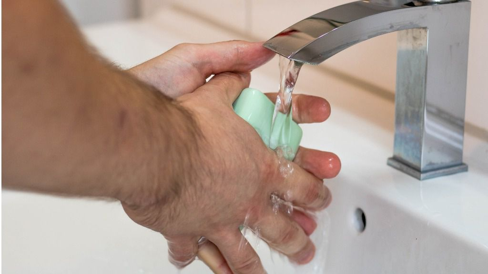
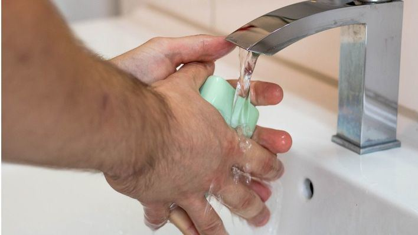

Salud no recomienda usar mascarillas pero sí 'lavarse las manos'

La directora general de Salud Pública de Baleares, Maria Antonia Font, ha reiterado este domingo que 'no se recomienda' el uso de la mascarilla por parte de los ciudadanos para evitar el contagio de virus como el coronavirus o la gripe, pero sí lavarse las manos con frecuencia.
En rueda de prensa, Font ha querido dejar claro que las medidas epidemiológicas de salud pública para la población no prevén nunca el uso de las mascarillas entre los ciudadanos, pero 'sí el lavado de manos'.
Las mascarillas, ha continuado, son para el personal sanitario y para casos concretos tras una recomendación clínica.
Sin embargo, 'el lavado de manos es clave', ha insistido Font, que ha dicho que la mascarilla da una 'falsa sensación de protección'.
La directora general es consciente de la alta demanda estas semanas de mascarillas en las farmacias de Baleares debido al coronavirus.
Ante cualquier duda sobre la salud y el coronavirus, los ciudadanos deben dirigirse al servicio de atención telefónica del 061 Salut Respon.
Posted On: 2020-02-09T00:00:00
Posted By: Por Redacción

Content Date: 2020-02-09
Download Date: 2021-04-21
Document ID: L0C04AIIA